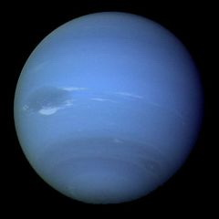

|

` Сонце

Меркурій

Венера

Земля

Місяць

Марс

Юпітер

Сатурн

Уран

Нептун

Плутон
|
Нептун

Ця планета названа на честь римського бога води. Відстань до Сонця — 4494,1 млн. кілометрів.
Пройшовши біля Урана, «Вояджер 2» досяг Нептуна у 1989 році — остання зупинка за 12-річну мандрівку в космосі. Дані, надіслані на Землю, засвідчують, що у Нептуна не менше 8 супутників і 4 кільця з каменю, пилу і льоду.
 Його супутник — Тритон — більше Плутона, він один з декількох супутників у Сонячній системі зі своєю власною атмосферою (з азоту та інших газів). На Тритоні є також льодові океани (з температурою — 235 °С) і гейзери, що викидають азот. Вчені вважають, що Тритон колись міг бути самостійною планетою, але гравітація Нептуна, яка в 1,5 рази сильніша земної, притягла його в свою орбіту мільйон років тому. Тритон рухається навколо Нептуна у напрямку, протилежному рухові самої планети.
Його супутник — Тритон — більше Плутона, він один з декількох супутників у Сонячній системі зі своєю власною атмосферою (з азоту та інших газів). На Тритоні є також льодові океани (з температурою — 235 °С) і гейзери, що викидають азот. Вчені вважають, що Тритон колись міг бути самостійною планетою, але гравітація Нептуна, яка в 1,5 рази сильніша земної, притягла його в свою орбіту мільйон років тому. Тритон рухається навколо Нептуна у напрямку, протилежному рухові самої планети.
Менший супутник — Нереїда — відкритий у 1949 році. Третім за величиною супутником є Наяда, що має всього 400 км у поперечнику.
Нептун робить повний оберт навколо Сонця по своїй орбіті за 165 земних років. День на Нептуні триває 16 годин. Нептун у 4 рази більший Землі і дещо менший Урану. Його атмосфера складається з водню, гелію і метану. Погодні умови дуже сурові — з вітрами (швидкість до 640 км/год) і Великою темною плямою — постійним ураганом, як і на Юпітері.
|